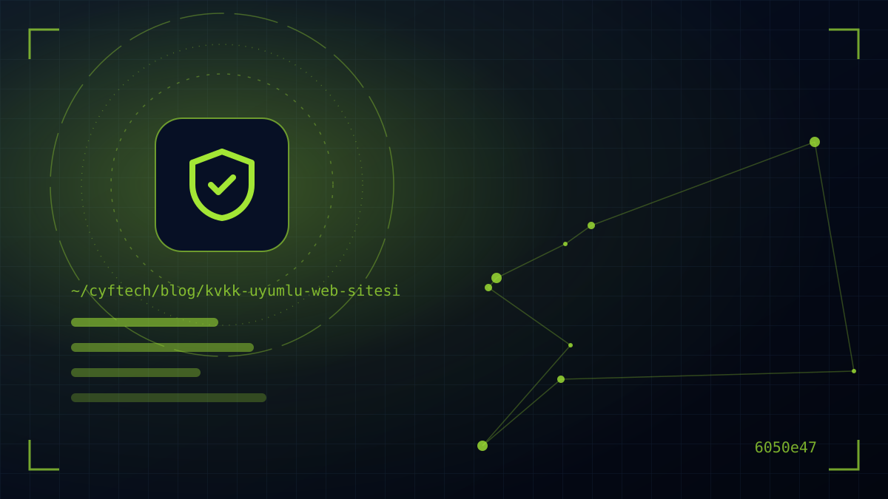

إذا كان في موقعك نموذج تواصل، أو شيفرة Google Analytics، أو زر WhatsApp، فأنت تعالج بيانات شخصية. لم يعد الموقع المتوافق مع KVKK (قانون حماية البيانات الشخصية التركي) رفاهية خاصة بالشركات الكبرى؛ فموقع الشركة الصغيرة يخضع للقواعد نفسها.
نشرت هيئة حماية البيانات الشخصية في يوليو 2025 النسخة المحدّثة من دليل تطبيقات ملفات تعريف الارتباط؛ وفي 2024 دخلت حيز التنفيذ تعديلات مهمة في القانون رقم 6698 بشأن البيانات ذات الطبيعة الخاصة والنقل إلى الخارج. نشرح في هذا المقال خطوة بخطوة أين ينطوي الموقع على مخاطر من منظور KVKK، والفرق بين نص الإفصاح والموافقة الصريحة، وكيف يجب أن يبدو شريط ملفات الارتباط الصحيح، وما الذي عليك إصلاحه على الجانب التقني.
ما البيانات الشخصية التي يعالجها الموقع؟
الخطوة الأولى للتوافق مع KVKK هي أن تُعدّ بصدق قائمة بالمواضع التي يجمع فيها موقعك البيانات. معظم الشركات تفكر في نموذج التواصل فقط؛ لكن البيانات الشخصية تُعالَج في أماكن أكثر بكثير مما تظن:
- النماذج: التواصل، وطلب العرض، والموعد، وطلب التوظيف، والاشتراك في النشرة. الاسم والبريد الإلكتروني والهاتف، بل وبيانات شاملة كالسيرة الذاتية.
- ملفات الارتباط وشيفرات التتبع: Google Analytics، وبكسل Meta، ووسم تحويل Google Ads، وأدوات الخرائط الحرارية. وهي تجمع معرّفات إلكترونية وبيانات سلوكية.
- سجلات الخادم: عنوان IP، ومعلومات المتصفح، ووقت الوصول. وسجلات الحركة المحفوظة بموجب القانون رقم 5651 تندرج ضمن هذه المجموعة أيضًا.
- إضافات الأطراف الثالثة: فيديو YouTube المضمّن، وخرائط Google، وأدوات الدعم المباشر وWhatsApp، وأزرار المشاركة على وسائل التواصل.
- العضوية والتجارة الإلكترونية: بيانات الحساب، والعنوان، وسجل الطلبات. أما بيانات بطاقة الدفع فتُعالَج عادةً مباشرة لدى مؤسسة الدفع.
عندما تُعدّ هذه القائمة، أجب عن ثلاثة أسئلة لكل بيان: لماذا أجمعه، وعلى أي سبب قانوني أستند، وكم من الوقت أحتفظ به؟ هذه الإجابات تشكّل هيكل نص الإفصاح وسياسة ملفات الارتباط اللذين سنشرحهما بعد قليل.
نص الإفصاح والموافقة الصريحة ليسا الشيء نفسه
أكثر خطأ شيوعًا في المواقع هو دمج نص الإفصاح والموافقة الصريحة في مربع موافقة واحد. فعبارة «قرأت نص KVKK وأوافق عليه» تخلط بين التزامين مختلفين.
نص الإفصاح: إلزامي في كل الأحوال
وفقًا للمادة 10 من القانون، يجب عليك إعلام الشخص عند جمع البيانات بما يلي: هوية المسؤول عن البيانات، وأغراض المعالجة، والجهات التي قد تُنقل إليها البيانات والغرض من ذلك، وطريقة الجمع وسببه القانوني، وحقوق الشخص بموجب المادة 11. الإفصاح هو إعلام؛ ولا يتطلب موافقة الشخص. لذا يكفي رابط ظاهر بوضوح أسفل النموذج مباشرة بدلًا من مربع «قرأت وأوافق».
الموافقة الصريحة: فقط في غياب سبب آخر
الموافقة الصريحة هي موافقة تتعلق بموضوع محدد، وتستند إلى الإعلام، وتُمنح بإرادة حرة. يجب على المسؤول عن البيانات أن ينظر أولًا فيما إذا كان أحد شروط المعالجة الأخرى، مثل إبرام العقد أو الالتزام القانوني أو المصلحة المشروعة، ينطبق؛ وإن لم ينطبق أيٌّ منها يلجأ إلى الموافقة الصريحة. فمثلًا لا يلزم الحصول على موافقة صريحة للرد على شخص ملأ نموذج طلب عرض؛ لكن إرسال رسائل حملات إلى الشخص نفسه يتطلب موافقة منفصلة.
| الحالة | الإفصاح | الموافقة الصريحة |
|---|---|---|
| الرد على نموذج التواصل | لازم | غير لازمة عادةً |
| النشرة البريدية ورسائل الحملات | لازم | تلزم موافقة منفصلة (مع التسجيل في İYS) |
| ملفات الارتباط الضرورية (الجلسة، السلة، الأمان) | لازم | غير لازمة |
| ملفات ارتباط الإعلانات وإعادة الاستهداف | لازم | لازم |
| بيانات ذات طبيعة خاصة مثل المعلومات الصحية في طلب التوظيف | لازم | بحسب الحالة؛ اتسعت الشروط بتعديل 2024 |
لا يجوز جعل الموافقة الصريحة شرطًا مسبقًا للخدمة. فعدم تمكن شخص لم يوافق على النشرة من إرسال نموذج التواصل يُفقد الموافقة صفة الحرية. ويجب أن تأتي مربعات الموافقة فارغة افتراضيًا.
شريط ملفات الارتباط الصحيح وفق دليل KVKK
يُعدّ دليل تطبيقات ملفات تعريف الارتباط الصادر عن KVKK بتاريخ يوليو 2025 أكثر خارطة طريق ملموسة لأصحاب المواقع. والرسالة الأساسية للدليل هي: ليست كل ملفات الارتباط تتطلب موافقة صريحة، لكن الملفات التي تتطلب الموافقة يجب ألا تعمل قبل موافقة المستخدم.
ما ملفات الارتباط التي يمكن استخدامها دون موافقة؟
يتناول الدليل أمثلة مثل ملفات الجلسة وإدخال النماذج، والمصادقة، والأمان المتمحور حول المستخدم، وموازنة الحمل، وتفضيلات الواجهة كاللغة، وملفات السلة، ضمن شروط المعالجة غير الموافقة الصريحة. ويشير إلى أن ملفات التحليلات من الطرف الأول يمكن اعتبارها ضمن هذا النطاق أيضًا، بشرط أن تقتصر على قياس أداء الموقع، وأن تُقلَّل البيانات بتدابير مثل إخفاء عنوان IP، وألا يجري تتبع عابر بين المواقع. أما ملفات الإعلانات وإعادة الاستهداف وتتبع الأطراف الثالثة فتتطلب موافقة صريحة.
كيف يجب أن تكون لوحة إدارة ملفات الارتباط الجيدة؟
- أزرار متساوية: يعرض الدليل تقديم أزرار «قبول» و«رفض» و«التفضيلات» في اللوحة التي تظهر عند دخول الموقع بلون وحجم وخط متساوٍ كمثال على الممارسة الجيدة. ودفن خيار الرفض في رابط رمادي صغير يخالف هذا المبدأ.
- مغلقة افتراضيًا: يجب أن تأتي فئات ملفات الارتباط المستندة إلى الموافقة الصريحة غير مفعّلة في البداية على شاشة التفضيلات.
- الموافقة أولًا ثم الشيفرة: يجب ألا تُحمَّل بكسلات الإعلانات ووسوم التتبع قبل موافقة المستخدم. فمجرد عرض الشريط مع تشغيل كل شيء في الخلفية لا يحقق التوافق.
- موافقة قابلة للسحب: يجب أن يتمكن المستخدم من تغيير تفضيله لاحقًا بسهولة؛ ويذكر الدليل أيقونة أو شريطًا صغيرًا في زاوية الصفحة كمثال جيد.
- لا جدار لملفات الارتباط: ممارسات «جدار ملفات الارتباط» التي تربط دخول الموقع بقبول جميع الملفات قد تُخلّ بالإرادة الحرة ولا تُعدّ موافقة صحيحة.
- إرهاق الموافقة: بدلًا من السؤال في كل زيارة، يُوصى بالتذكير بالتفضيل على فترات تتناسب مع عمر ملف الارتباط.
أما سياسة ملفات الارتباط فهي صفحة منفصلة يُربط إليها من اللوحة: تتضمن قائمة الملفات المستخدمة وغرضها ومدتها وما إذا كانت من الطرف الأول أو الثالث وكيفية إدارتها. ويؤكد الدليل أيضًا أن عبارات من قبيل «باستخدامك الموقع تُعدّ موافقًا على ملفات الارتباط» لا تشكّل موافقة صحيحة.
شريط ملفات الارتباط ليس ديكورًا، بل مفتاح: يجب ألا يُفتح الباب قبل أن يقول المستخدم «نعم».
نموذج التواصل والنشرة وأذونات الرسائل التجارية
النماذج هي الجزء الأكثر ظهورًا في تصميم موقع متوافق مع KVKK، وعند إعدادها بشكل صحيح لا تُفسد تجربة المستخدم. والبنية التي نقترحها كالتالي:
- الخطوة 1 — ضع أسفل النموذج مباشرة جملة قصيرة مثل «تُعالَج بياناتك الشخصية وفق نص الإفصاح» مع رابط إلى النص. ومربع الموافقة ليس إلزاميًا.
- الخطوة 2 — إذا احتجت إلى إذن تسويقي فأضف مربعًا منفصلًا اختياريًا يأتي فارغًا. ولا تجعل إرسال النموذج مشروطًا بهذا المربع.
- الخطوة 3 — إذا أردت إرسال رسائل تجارية إلكترونية فلا تنسَ التزامات القانون رقم 6563 ونظام إدارة الرسائل (İYS)؛ إذ يجب تسجيل الموافقات المحصّلة في İYS.
- الخطوة 4 — حدّد إلى أين تذهب بيانات النموذج: صندوق بريد، أو CRM، أو Google Sheets، أو أداة نماذج مستضافة في الخارج. وهذا يرتبط مباشرة بمسألة النقل إلى الخارج التي سنشرحها أدناه.
- الخطوة 5 — حدّد مدة الاحتفاظ. فإذا لم يكن هناك مبرر للاحتفاظ إلى أجل غير مسمى بسجلات نماذج وردت قبل عامين ولم تتحول إلى عروض، فاحذفها أو جرّدها من الهوية دوريًا.
يجب عليك أيضًا توفير طريقة تقديم طلبات تمكّن الأشخاص من ممارسة حقوقهم بموجب المادة 11 من KVKK. ويجب الرد على الطلبات خلال 30 يومًا كحد أقصى؛ ونموذج طلب في الموقع أو عنوان بريد إلكتروني واضح يسهّل هذه العملية.
تعديلات 2024: النقل إلى الخارج والخدمات الأجنبية
التعديلات التي أُجريت بالقانون رقم 7499 ودخلت حيز التنفيذ في 1 يونيو 2024 مهمة للمواقع خاصةً فيما يتعلق بـ نقل البيانات إلى الخارج. فإذا كنت تستخدم استضافة أو خدمة بريد أو أداة تحليلات أو خدمة نماذج أو CRM مستضافة في الخارج، فقد تكون بياناتك تُنقل إلى خارج تركيا.
في النظام الجديد يمكن النقل بتوفر أحد شروط المعالجة، مع النقل إلى بلد صدر بشأنه قرار كفاية، أو توفير إحدى الضمانات المناسبة مثل العقد القياسي الذي أعلنته الهيئة. ويجب إبلاغ الهيئة بالعقد القياسي خلال خمسة أيام عمل من توقيعه. أما خيار النقل بالموافقة الصريحة المعمول به في النظام القديم فلم يعد أساسًا قائمًا بذاته بعد انتهاء الفترة الانتقالية في 1 سبتمبر 2024؛ وبقيت الموافقة الصريحة استثناءً ضيقًا لعمليات النقل العرضية.
وبالتعديل نفسه اتسعت أيضًا شروط معالجة البيانات ذات الطبيعة الخاصة. وعلى المواقع التي تطلب معلومات صحية في نموذج التوظيف أو تصمم نموذج مواعيد لعيادة أن تقيّم هذه المسألة على حدة؛ لأن التدابير الأمنية الإضافية التي يحددها المجلس تسري أيضًا على البيانات ذات الطبيعة الخاصة.
التدابير الأمنية التقنية والإدارية لـ KVKK
تفرض المادة 12 من KVKK على المسؤول عن البيانات اتخاذ التدابير التقنية والإدارية المناسبة لحماية البيانات من الوصول غير المشروع. وما يقابل ذلك في الموقع خطوات ملموسة وقابلة للقياس:
- HTTPS في كل صفحة: شهادة SSL صالحة وإعادة توجيه دائمة من HTTP إلى HTTPS. للتفاصيل يمكنك الاطلاع على دليلنا لأمان المواقع وشهادات SSL.
- برمجيات محدّثة: تحديث نظام إدارة المحتوى والإضافات والمكتبات بانتظام؛ وإزالة الإضافات غير المستخدمة.
- إدارة الصلاحيات: كلمة مرور قوية وتحقق بخطوتين للوحة الإدارة؛ وألا يصل إلى سجلات النماذج إلا من يحتاج إليها.
- النسخ الاحتياطي والسجلات: نسخ احتياطية منتظمة ومشفّرة، وتسجيل عمليات الدخول إلى اللوحة.
- خطة خرق البيانات: عند اكتشاف تسرّب يجب إبلاغ المجلس في أقرب وقت وخلال 72 ساعة كحد أقصى. وتحديد من يفعل ماذا مسبقًا يوفّر الوقت لحظة الأزمة.
هذه التدابير مهمة ليس لـ KVKK فحسب، بل لسمعة موقعك وظهوره في البحث أيضًا. فالموقع المخترق قد يخسر ثقة العملاء وترتيبه في Google معًا.
هل يلزم التسجيل في VERBİS، وكم تبلغ الغرامات؟
VERBİS (نظام سجل المسؤولين عن البيانات) ليس إلزاميًا لكل شركة. فوفقًا لقرارات المجلس، يُعفى من التسجيل المسؤولون عن البيانات الذين لا يكون نشاطهم الرئيسي معالجة البيانات ذات الطبيعة الخاصة، ويقل عدد موظفيهم السنوي عن 50 وإجمالي ميزانيتهم السنوية عن 100 مليون ليرة. وبإعلان الهيئة المؤرخ في 1 أكتوبر 2025، شمل الاستثناء أيضًا من يقل عدد موظفيهم السنوي عن 10 وميزانيتهم عن 10 ملايين ليرة حتى لو كان نشاطهم الرئيسي معالجة البيانات ذات الطبيعة الخاصة.
تُحدَّث الغرامات الإدارية سنويًا بمعدل إعادة التقييم، وتنشر الهيئة الجدول المحدّث على موقعها. وبالنسبة لعام 2026 يبلغ الحد الأدنى لمخالفة التزام الإفصاح نحو 85 ألف ليرة والحد الأقصى نحو 1.7 مليون ليرة؛ وفي مخالفات أمن البيانات وVERBİS يتجاوز الحد الأقصى 17 مليون ليرة. وننصحك بالرجوع إلى الجدول الرسمي للهيئة للأرقام الدقيقة.
- هل أُعدّت قائمة بجميع نقاط جمع البيانات في الموقع؟
- هل يوجد رابط لنص الإفصاح أسفل كل نموذج؟
- هل الموافقة التسويقية مربع منفصل واختياري ويأتي فارغًا؟
- هل تظهر أزرار قبول / رفض / التفضيلات متساوية في لوحة ملفات الارتباط؟
- هل تمتنع شيفرات الإعلانات والتتبع عن التحميل قبل الحصول على الموافقة؟
- هل حُدّدت الخدمات الموجودة في الخارج وأساس النقل؟
- هل قناة تقديم الطلبات وخطة الاستجابة لخرق البيانات جاهزة؟
الأسئلة الشائعة
هل KVKK إلزامي لموقع شركة صغيرة؟
نعم. يسري KVKK على جميع الأشخاص الطبيعيين والاعتباريين الذين يعالجون بيانات شخصية. وقد تُعفى الشركات الصغيرة من التسجيل في VERBİS، لكن التزامات الإفصاح وأمن البيانات والرد على طلبات أصحاب البيانات تظل قائمة.
هل يلزم الحصول على موافقة صريحة لنموذج التواصل؟
غالبًا لا. فمعالجة البيانات للرد على الطلب تُعدّ في الغالب ضمن التحضير لإبرام عقد أو المصلحة المشروعة؛ ويكفي نص الإفصاح. أما التواصل لأغراض تسويقية فيتطلب موافقة منفصلة واختيارية.
هل يلزم الحصول على موافقة ملفات الارتباط لاستخدام Google Analytics؟
يمكن لدليل ملفات الارتباط الصادر عن KVKK أن يعتبر التحليلات من الطرف الأول، المقتصرة على قياس أداء الموقع والمقلَّلة البيانات والخالية من التتبع العابر، ضمن الشروط غير الموافقة الصريحة. أما الإعدادات التي تتضمن ميزات إعلانية أو إعادة استهداف أو تتبعًا من أطراف ثالثة فتتطلب موافقة صريحة.
هل يجب أن يحتوي شريط ملفات الارتباط على زر رفض؟
يعرض دليل الهيئة لعام 2025 تقديم أزرار القبول والرفض والتفضيلات بحجم ولون وخط متساوٍ كمثال على الممارسة الجيدة. وأن يكون الرفض بسهولة القبول هو أكثر الطرق أمانًا لإثبات أن الموافقة قائمة على إرادة حرة.
هل يمكن نسخ نص الإفصاح وفق KVKK من نموذج جاهز؟
لا يُنصح بذلك. يجب أن يشرح نص الإفصاح أي البيانات تعالجها فعليًا ولأي غرض وبأي خدمات. ونسخ نص شركة أخرى قد يؤدي إلى إفصاح مضلل لا يعكس الواقع.
كلمة أخيرة
الموقع المتوافق مع KVKK ليس موقعًا مليئًا بالنصوص القانونية الطويلة؛ بل موقع يعرف ما يجمعه، ولا يجمع ما لا يلزم، ويقدم للمستخدم خيارًا حقيقيًا، ويحفظ البيانات بأمان. وهذا النهج يعزز ثقة الزائر أيضًا. ننصحك بالعمل مع خبير بشأن محتوى النصوص القانونية؛ أما على الجانب التقني مثل لوحة ملفات الارتباط ومسارات النماذج وتحميل الوسوم وفق الموافقة وأمان الخادم، فنحن معك عبر حلول الويب لدينا. وإذا كنت تخطط لموقع جديد فيمكنك الاطلاع على دليلنا للمواقع المؤسسية أيضًا، ولإجراء فحص KVKK تقني لموقعك الحالي التواصل معنا.